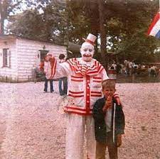

ASESINOS SERIALES
-
POGO
Así bautizó el estadounidense John Wayne Gacy al personaje con el cual se disfrazaba los fines de semana para llevar alegría efímera a niños, y uno que otro adulto.
-
CHARLES MANSON
Charles Milles Manson fue un criminal, sectario y músico aficionado estadounidense, conocido por liderar lo que se conoció como «La Familia Manson»
-
EL CARNICERO

Jeffrey Dahmer violó y asesinó a quince homosexuales entre 1978 y 1991. Entregado, devoró sus miembros y los manipuló en pos de la creación del amante eterno. Un jurado le condenó a 15 cadenas perpetua
-
EL DESTRIPADOR
Andréi Románovich Chikatilo fue un asesino en serie y caníbal soviético. Chikatilo es considerado el peor asesino en serie de la historia de la Unión Soviética.